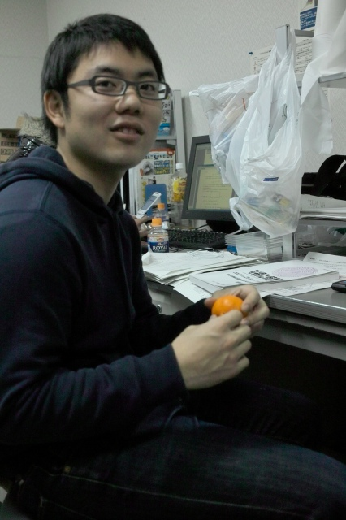
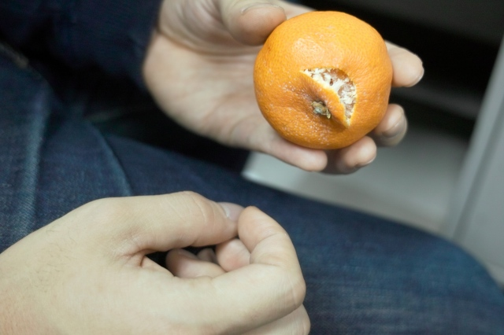

K(O)梶くんが提唱するみかんの正しい食べ方とは！ これがスタンダードだそうです。
知らない人は人生の半分損しています。

M永くん（半笑い）
ヘタから剥くのが正解。
ほら、一般的な方法だと実にキズがついてしまう。
大事なことは、香りで良いみかんかどうか判断すること
かみしめながら、空気を吸って味をまろやかにする（ジュッル）。
ヘタからです。ヘタ。大事なことなので2回言いました。
ジュッル
| ・みかんの正しい食べ方(H22.01.26) | |||
K(O)梶くんが提唱するみかんの正しい食べ方とは！ これがスタンダードだそうです。 |
|||
|

知らない人は人生の半分損しています。 |
M永くん（半笑い） | ||
|

ヘタから剥くのが正解。 |
ほら、一般的な方法だと実にキズがついてしまう。 | ||
|
大事なことは、香りで良いみかんかどうか判断すること |
かみしめながら、空気を吸って味をまろやかにする（ジュッル）。 | ||
|
ヘタからです。ヘタ。大事なことなので2回言いました。 |
ジュッル | ||